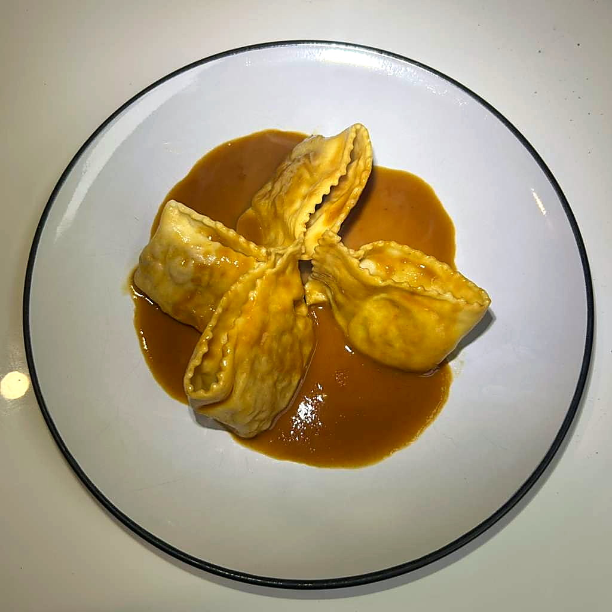

Pasta / Shapes
Caramelle

- Dough
- Egg Dough
- Rest
- 45 minutes to 1 hour uncovered in the refrigerator
- Source
- Pasta, Missy Robbins
- Formed
- stuffed
- Region
- Emilia-Romagna, and widely made in the United States
Method
- Make your chosen egg-based dough, then roll and sheet it.
- Dust a wooden board with 00 flour. Cover a sheet pan with parchment, then dust the parchment with semolina.
- Lay one sheet on the board. Using a straight-edged dough divider, cut it into 2 1/2 by 3-inch rectangles. A plain pastry cutter with a ruler, or a knife with a ruler, works too. Keep the rectangles under plastic wrap or a towel.
- Load the filling into a pastry bag cut to a 1/2-inch opening. Pipe a rope of filling 1 1/2 inches long, sitting roughly 1/2 inch back from the wide (3-inch) bottom edge.
- Roll that bottom edge gently over the filling into a cylinder. Press down with an index finger at each end of the filling to seal the dough, forcing the air out.
- Pinch the closure on each side of the filling with thumb and index finger so it looks like a wrapped candy.
- Set the piece on the prepared pan. Fill and roll the rest of the rectangles, keeping them in a single layer, and dust the pan again with semolina.
- Repeat with the remaining sheets.
- Refrigerate uncovered for 45 minutes to 1 hour to dry. Covered pieces sweat and get too wet. To hold longer, lay plastic wrap loosely over the pan and refrigerate up to 8 hours.
Notes
- Sheet is cut into 2 1/2 by 3-inch rectangles with a straight-edged dough divider, so the finished piece has plain, not fluted, ends.
- Filling per piece: a rope 1 1/2 inches long, set 1/2 inch in from the 3-inch-wide edge, piped through a 1/2-inch opening. The rope is half the length of the edge it sits on, which leaves bare dough at each end for the pinched twists.
- The 3-inch side is the bottom edge, so the roll axis runs along the long side of the rectangle.
- Seal geometry: roll into a cylinder, press at each end of the filling with your index fingers to force out air, then pinch each end into a candy-wrapper twist. There is no braid and no fluted edge.
- No misting step is called for. The book goes straight from piping the filling to rolling the cylinder.
- Can be made long and thin, like a small Tootsie Roll, or shorter and fatter, like saltwater taffy.
- Storage: 45 minutes to 1 hour uncovered to dry, then up to 8 hours refrigerated under loose plastic.
- Served with any sauce that will not hide the shape, such as a drizzle of balsamic or a plain butter sauce. With no traditional preparation of its own, it is used as freely as ravioli.